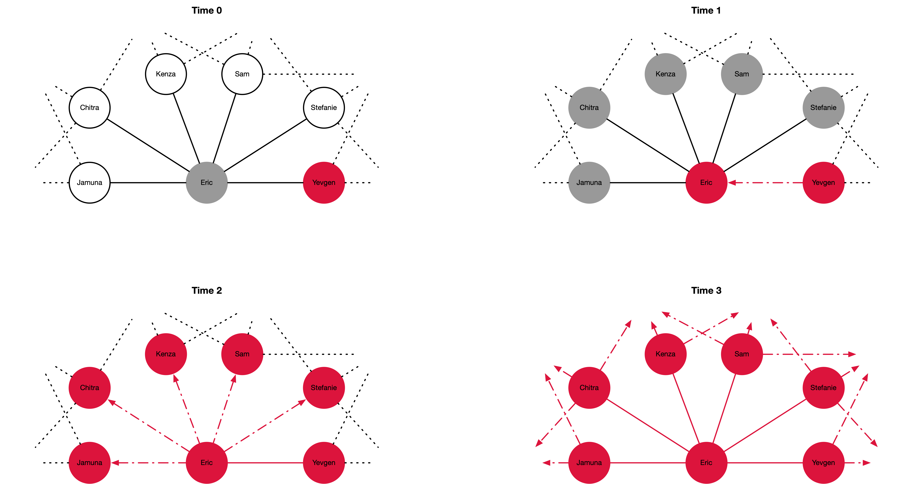
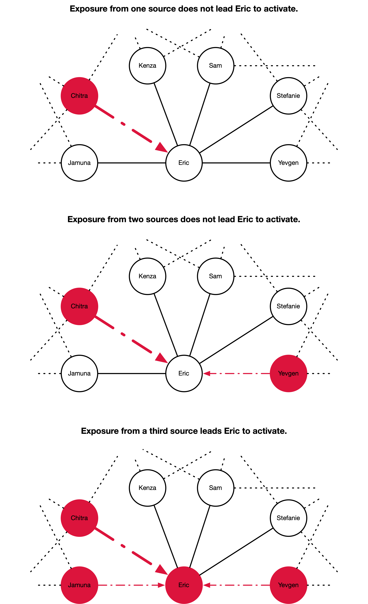

27 Diffusion
- Two chapters to be integrated
- GESIS
28 GESIS
29 Simulation and Agent-based Modelling
This notebook accompanies the recorded lecture on “Simulation and Agent-based Modelling.” It’s intended to provide you with a hands-on experience in building and analyzing agent-based models using Python.
29.1 Learning Objectives
By the end of this workshop, you will be able to:
- Understand the basic concepts and components of agent-based modeling.
- Implement a simple SIR model using Mesa, a Python library for agent-based modeling.
- In this notebook, this is done via the course package
icsspy, but the models we load here are the same ones I developed in the lecture.
- In this notebook, this is done via the course package
- Analyze the behavior of the SIR model under different conditions and parameters.
- Explore a Bounded Confidence Model to understand opinion dynamics.
- Conduct sensitivity analysis and parameter sweeps to systematically investigate model behavior.
29.2 Setup
Let’s start by importing the necessary packages and configuring our environment.
import mesa
from mesa.batchrunner import batch_run
import matplotlib.pyplot as plt
import numpy as np
import pandas as pd
import random
import networkx as nx
import seaborn as sns
import matplotlib.pyplot as plt
import icsspy
icsspy.set_style()
from icsspy.networks import plot_line_comparison29.3 Load and Configure the Model(s)
We’ll begin by exploring a classic Susceptible-Infected-Recovered (SIR) model. This model is often used to simulate the spread of infectious diseases.
29.3.1 Model 1: SIR Model with High Transmissibility
First, let’s load the SIRModel class from the course package and define the parameters for our first model, which simulates a disease with a high infection rate.
from icsspy.abms.sir import SIRModel
model_1_params = {'N': 100,
'grid_height': 40,
'grid_width': 40,
'infection_rate': 0.3,
'max_agent_step_size': 1,
'n_initial_infections': 2,
'n_iterations': 150,
'recovery_time_range': [14, 24]
}
print("Model 1 Params\n", model_1_params)Here, we have a population of 100 agents on a 40x40 grid. The infection rate is set to 0.3, meaning there’s a 30% chance that a susceptible agent will become infected when in contact with an infected agent. The agents can move to adjacent cells, and their recovery time is randomly chosen between 14 and 24 time steps.
Now, let’s run the model and store the results.
model_1 = SIRModel(
n_initial_infections = model_1_params['n_initial_infections'],
grid_width = model_1_params['grid_width'],
grid_height = model_1_params['grid_height'],
N = model_1_params['N'],
infection_rate = model_1_params['infection_rate'],
recovery_time_range = model_1_params['recovery_time_range'],
max_agent_step_size = model_1_params['max_agent_step_size'],
)
for i in range(model_1_params['n_iterations']):
model_1.step()
m1res = model_1.datacollector.get_model_vars_dataframe()
m1res29.3.2 Model 2: SIR Model with Low Transmissibility
model_2_params = {'N': 100,
'grid_height': 40,
'grid_width': 40,
'infection_rate': 0.15,
'max_agent_step_size': 1,
'n_initial_infections': 2,
'n_iterations': 150,
'recovery_time_range': [14, 24]
}
print("\nModel 2 Params\n", model_2_params)We have kept most of the parameters the same as in Model 1, except for the infection rate, which is now 0.15, to simulate a less contagious disease.
Now, let’s run Model 2.
model_2 = SIRModel(
n_initial_infections = model_2_params['n_initial_infections'],
grid_width = model_2_params['grid_width'],
grid_height = model_2_params['grid_height'],
N = model_2_params['N'],
infection_rate = model_2_params['infection_rate'],
recovery_time_range = model_2_params['recovery_time_range'],
max_agent_step_size = model_2_params['max_agent_step_size'],
)
for i in range(model_2_params['n_iterations']):
model_2.step()
m2res = model_2.datacollector.get_model_vars_dataframe()
m2res29.3.3 Comparing the Two Models
Let’s compare the infection curves from both models to see how the different infection rates affect the spread of the disease.
fig, ax = plt.subplots()
ax.plot(m1res['Infected'], label=r'High transmissibility, $\beta$=0.3')
ax.plot(m2res['Infected'], label=r'Low transmissibility $\beta$=0.15')
plt.xlabel("\nDiscrete Steps in Time")
plt.ylabel("Proportion Infected\n")
plt.legend(loc='upper right', fontsize=10)
plt.savefig('output/sir_compare_models_1-2.png')29.3.4 Analyzing Agent Interactions
In addition to tracking the number of infected agents, it’s also useful to analyze how agents interact with each other during the simulation.
interaction_graphs = {}
interaction_graph_summaries = {}
models = [model_1, model_2]
for i, model in enumerate(models, start=1):
wel = []
for agent in model.schedule.agents:
for k, v in agent.interactions.items():
wel.append((int(agent.unique_id), k, v))
G = nx.Graph()
G.add_weighted_edges_from(wel)
interaction_graphs[f'M{i}'] = G
avg_degree = round(sum(dict(G.degree()).values()) / float(G.number_of_nodes()), 2)
interaction_graph_summaries[f'M{i}'] = (G.number_of_nodes(), G.number_of_edges(), avg_degree)interaction_graph_summaries = pd.DataFrame(interaction_graph_summaries).T
interaction_graph_summaries.columns = ['No. Nodes', 'No. Edges', 'Avg. Degree']
interaction_graph_summaries# Initialize an empty graph
G = interaction_graphs['M2']
weights = [d['weight'] for u, v, d in G.edges(data=True)]
plt.figure(figsize=(8, 6))
sns.ecdfplot(weights)
plt.xlabel('Interaction Weight')
plt.ylabel('ECDF')
plt.title('ECDF of Interaction Weights')
plt.grid(True)
plt.savefig('output/compare_agent_networks.png', dpi=300)29.4 Model Analysis
So far we have not been very systematic in how we’ve approaches analyzing the outputs of our SIR model. What’s involved in more systematic analyses?
The primary goal of analyzing an agent-based model is to gain insights into how the model behaves and how well it represents the real-world system it’s designed to simulate. This involves understanding the dynamics of the model, validating it against empirical data, and exploring the implications of different parameter settings.
When iteratively analyzing models, we can use Sensitivity Analysis, Parameter Sweeps, and Computational Experiments to understand, test, and analyze the behavior of the model under various conditions. These methods are essential for ensuring the model’s reliability and for interpreting its results.
29.5 Sensitivity Analysis: Peak Proportion Infected
Sensitivity Analysis: Peak Proportion Infected Sensitivity analysis helps determine how changes in model parameters affect the outcomes. Here, we’ll focus on the peak proportion of infected agents as our outcome of interest.
First, let’s set up a parameter sweep for the sensitivity analysis.
params = {
"N": 100,
"grid_height": 40,
"grid_width": 40,
"infection_rate": [0.2, 0.4, 0.6, 0.8,],
"recovery_time_range": [(7,14), (14,24)],
"max_agent_step_size": [2, 4, 6, 8, 10, 12],
"n_initial_infections": [1, 5, 10, 15, 20, 25]
}Then we can run multiple mpdels for every combination of parameters using the batch_run() function.
results = mesa.batch_run(
model_cls=SIRModel,
parameters=params,
iterations=10,
max_steps=100,
number_processes=1,
data_collection_period=1, # collect data at every step
display_progress=True,
)
results_df = pd.DataFrame(results)
results_df.info()results_df.head()Let’s create a small multiples plot to compare some high-level patterns across different parameter settings.
melted_df = pd.melt(
results_df,
# include 'RunId' to differentiate runs
id_vars=['n_initial_infections', 'infection_rate', 'Step', 'RunId'],
value_vars=['Susceptible', 'Infected', 'Recovered'],
var_name='State',
value_name='Proportion'
)
# create the FacetGrid
g = sns.FacetGrid(
melted_df, col="n_initial_infections", hue="State",
col_wrap=3, height=4, aspect=1.5
)
# map the scatterplot for individual observations
g.map_dataframe(
sns.scatterplot, x='Step', y='Proportion', alpha=0.005, edgecolor=None
)
# map the lineplot for aggregated data
g.map_dataframe(
sns.lineplot, x='Step', y='Proportion', linewidth=2,
)
g.add_legend()
g.set_axis_labels("Time Step", "Proportion")
g.set_titles("Initial Infections: {col_name}")
plt.savefig("images/sir_subplots.png", dpi=300)
Next, we aggreate the results for the sensitivity analysis.
aggregated_results = results_df.groupby(["RunId", "infection_rate", "recovery_time_range", "max_agent_step_size", "n_initial_infections"]).agg(
peak_infected=("Infected", "max")
).reset_index()
aggregated_results.head()Let’s plot the sensitivity analysis results. We’ll need to convert the recovery_time_range tuples into strings first.
aggregated_results['recovery_time_range_str'] = aggregated_results['recovery_time_range'].apply(lambda x: f"{x[0]}-{x[1]}")And then we can set up the plot.
fig, axes = plt.subplots(2, 2, figsize=(16, 12), sharey=True)
# infection rate
sns.boxplot(ax=axes[0, 0], x="infection_rate", y="peak_infected", data=aggregated_results)
axes[0, 0].set_title("\n(a) Sensitivity to Infection Rate", loc="left")
axes[0, 0].set_xlabel("\nInfection Rate")
axes[0, 0].set_ylabel("Peak Infected\n")
# recovery time range (use the string version we just created)
sns.boxplot(ax=axes[0, 1], x="recovery_time_range_str", y="peak_infected", data=aggregated_results)
axes[0, 1].set_title("\n(b) Sensitivity to Recovery Time Range", loc="left")
axes[0, 1].set_xlabel("\nRecovery Time Range")
axes[0, 1].set_ylabel("Peak Infected\n")
# max agent step size
sns.boxplot(ax=axes[1, 0], x="max_agent_step_size", y="peak_infected", data=aggregated_results)
axes[1, 0].set_title("\n(c) Sensitivity to Max Agent Step Size", loc="left")
axes[1, 0].set_xlabel("\nMax Agent Step Size")
axes[1, 0].set_ylabel("Peak Infected\n")
# initial infections
sns.boxplot(ax=axes[1, 1], x="n_initial_infections", y="peak_infected", data=aggregated_results)
axes[1, 1].set_title("\n(d) Sensitivity to Initial Infections", loc="left")
axes[1, 1].set_xlabel("\nInitial Infections")
axes[1, 1].set_ylabel("Peak Infected\n")
plt.tight_layout()
plt.savefig("images/sir_sensitivity_analysis.png", dpi=300)
29.5.1 Correlate the Parameters with the Outcomes
As an additional step, we can correlate our parameters with the peak proportion infected to get a sense of the relative influence of each parameter. To do so, we have to transform the recovery time ranges into a single number. There are a few ways we could do this, but to keep things simple we’ll take the mean of the two values.
aggregated_results["recovery_time_range_numeric"] = aggregated_results["recovery_time_range"].apply(lambda x: sum(x) / len(x))Once we’ve done that, we’ll drop the original tuple (recovery_time_range) and it’s string representation (recovery_time_range_str). I’ll create a new dataframe for these modifications, since we’ll use the dropped variables in our second sensitivity analysis.
aggregated_results_4corr = aggregated_results.copy()
aggregated_results_4corr.drop(['recovery_time_range', 'recovery_time_range_str'], axis=1, inplace=True)And now we can correlate!
correlation_matrix = aggregated_results_4corr.corr()
peak_infected_correlations = correlation_matrix["peak_infected"].drop(
["peak_infected", "RunId"]
)Let’s visualize the correlations using a line comparison plot.
for_plotting = {}
for parameter, correlation in zip(peak_infected_correlations.index, peak_infected_correlations.values):
for_plotting[parameter] = round(correlation, 4)
plot_line_comparison(
for_plotting,
xrange=(0,1), # all positive correlations
print_decimals=True,
title="",
xlabel='\nCorrelations between model parameters and peak infection.',
filename="images/sir_correlations_params_peak_infection.png"
)29.6 Sensitivity Analysis: Time to Peak Proportion Infected
Next, let’s analyze how different parameters affect the time it takes for the infection to reach its peak.
time_to_peak = results_df.loc[results_df.groupby("RunId")["Infected"].idxmax()]
time_to_peak = time_to_peak[["RunId", "Step", "Infected"]].rename(
columns={"Step": "time_to_peak", "Infected": "peak_infected"}
)
time_to_peak_merged = pd.merge(time_to_peak, aggregated_results, on="RunId")Let’s visualize how the time to peak infection varies with different parameters.
fig, axes = plt.subplots(2, 2, figsize=(16, 12), sharey=True)
# Infection rate
sns.boxplot(ax=axes[0, 0], x="infection_rate", y="time_to_peak", data=time_to_peak_merged)
axes[0, 0].set_title("\n(a) Time to Peak Infection vs. Infection Rate", loc="left")
axes[0, 0].set_xlabel("\nInfection Rate")
axes[0, 0].set_ylabel("Time to Peak Infection\n")
# Recovery time range
sns.boxplot(ax=axes[0, 1], x="recovery_time_range_str", y="time_to_peak", data=time_to_peak_merged)
axes[0, 1].set_title("\n(b) Time to Peak Infection vs. Recovery Time Range", loc="left")
axes[0, 1].set_xlabel("\nRecovery Time Range")
axes[0, 1].set_ylabel("Time to Peak Infection\n")
# Max agent step size
sns.boxplot(ax=axes[1, 0], x="max_agent_step_size", y="time_to_peak", data=time_to_peak_merged)
axes[1, 0].set_title("\n(c) Time to Peak Infection vs. Max Agent Step Size", loc="left")
axes[1, 0].set_xlabel("\nMax Agent Step Size")
axes[1, 0].set_ylabel("Time to Peak Infection\n")
# Initial infections
sns.boxplot(ax=axes[1, 1], x="n_initial_infections", y="time_to_peak", data=time_to_peak_merged)
axes[1, 1].set_title("\n(d) Time to Peak Infection vs. Initial Infections", loc="left")
axes[1, 1].set_xlabel("\nInitial Infections")
axes[1, 1].set_ylabel("Time to Peak Infection\n")
plt.tight_layout()
plt.savefig("images/sir_time_to_peak_analysis.png", dpi=300)There is much more we could do here, but let’s move on to a different example.
31 Conclusion
We explored the basic components of agent-based models and how to implement them in Python using Mesa and icsspy, aa various techniques for analyzing the results. Through sensitivity analysis and parameter sweeps, we gained insights into how different parameters influence model outcomes.
We’ve just scratched the surface of what’s possible with agent-based models!
32 Going Viral: Modelling the Epidemic Spread of Simple Contagions
- TODO: Use
mesainstead ofNDLib. Version 3 comes out in October with a stable release to follow shortly thereafter. Note that the jump to 3 breaks backwards compatibility. Hold off on this change for now.
32.1 LEARNING OBJECTIVES
- Explain what simple contagions are
- Describe processes / mechanisms that enable simple contagions to spread rapidly via network connections
- Configure an agent-based simulation of the spread of simple contagions through social networks using the Python package NDLib
- Interpret aggregate results produced by many different executions of a simulation model
- Explain the basic idea of a SIR model, and describe how network-based SIR models deviate from SIR models based on differential equations
- Execute a simulation model on empirical network data, both cross-sectional and dynamic
32.2 LEARNING MATERIALS
You can find the online learning materials for this chapter in doing_computational_social_science/Chapter_17. cd into the directory and launch your Jupyter Server.
32.3 INTRODUCTION
In this chapter, we will explore another aspect of social network analysis with an emphasis on modelling the spread of contagions over networks to better understand network structure. In previous chapters on networks, I emphasized the idea that network structures govern the spread of various kinds of things, such as infectious diseases, information, beliefs, and behaviours. In this chapter, we will dig deeper into theory, methods, and models that can help us understand how such contagions spread through networks. We will start by discussing the basics of a network-based approach to diffusion, and will introduce the idea of a “simple contagion,” such as information or an infectious disease. Then I’ll compare and contrast traditional models of epidemic spread with some simple network models and finish by extending our discussion of simple contagions to dynamic networks.
32.4 EPIDEMIC SPREAD AND DIFFUSION
Scientific approaches to studying the spread of contagions through populations have been developing for well over a century. Epidemiologists have been using mathematical models of disease spread like the SIR model since at least the 1920s (Kermack and McKendrick 1927). Some of the fundamental ideas behind this particular type of model, which partitions populations into different “compartments” (Susceptible, Infected, Recovered/Removed, etc.) and models transitions between them, can even be traced back to models developed by the famous Dutch mathematician Daniel Bernoulli in 1766, which sought to understand the effect that eliminating smallpox would have on life expectency (Dietz and Heesterbeek 2002).
Traditional epidemiological models make some strong simplifying assumptions. The advent of network analysis has led epidemiologists to incorporate network structure and dynamics into their work to address some of those assumptions. Since it can be incredibly challenging, not to mention costly and time-consuming, to collect the relevant data, these models typically combine observational data with carefully specified simulation models that we can run thousands of times. We can then step back and look at the most common outcomes from these many simulations.
The value of a network approach to questions of diffusion is not limited to epidemiology. Network analysts are interested in the spread of many different kinds of contagions, infectious diseases being only one (important) example. In network analysis, we use the term “contagion” to mean some “thing” that spreads through a network; it may be a disease, or perhaps news, a new fashion trend, safe-sex behaviours, or some other quality. Usually, contagions are things that are not consumed as they spread, but propagate and increase in total. A sum of money being shared through a network, for example, is not usually called a contagion, nor is it subject to epidemic spread and diffusion.
To better understand the spread of a contagion through a network, there are some key terms that are important to know. A node is activated when they’ve adopted, caught, or been “infected” by whatever contagion is flowing over the network. For example, they might catch a cold or adopt a belief. A node is exposed to the contagion when an adjacent node is activated.
Consider the hypothetical network shown in Figure 32.1, through which an information-based contagion spreads over time. At first (Time 0), Yevgen has some interesting gossip he is eager to share. Since Yevgen and Eric are directly connected, Eric is “exposed.” Once Yevgen shares the information with Eric in Time 1, Eric becomes activated and his alters become exposed. Eric’s switch from exposed to activated is a state change. All state changes in the figure are represented by changes in node color from white (not activated, not exposed) to grey (exposed) to activated (crimson).
This is some really interesting gossip, and Eric can hardly contain it. He doesn’t. He shares it with his contacts, triggering another set of state changes in Time 2. Finally, in Time 3, all of Eric’s neighbourhood has been activated and the process continues to spread beyond the boundaries of the figure.

This is an illustration of a simple contagion process. It’s “simple” in several respects, the most salient of which is that transmission between any two people is practically effortless. A single interaction between two people is all that is needed to enable a simple contagion like information to spread. This is not just true for informational contagions, of course. Other simple contagions, such as COVID-19 or a sexually transmitted infection, spread with the same sort of ease. And yet we don’t learn new information from every conversation, contract COVID-19 from every face-to-face interaction, or develop an STI following every sexual encounter. And despite having much in common, there are substantial differences in the specific diffusion patterns for these and other simple contagions.
There are two things that are especially important to keep in mind here. First, most contagions are not automatically transmitted after a single exposure. Therefore, we think about these transmission events in a probabilistic way rather than a deterministic way: each exposures increases the likelihood of activation. The second thing to understand is specifically related to social networks, and it’s another simple idea that turns out to have profound scientific and practical consequences. All contagions are ultimately spread by specific transmission mechanisms like conversation (e.g., informational contagions), being co-present in the same spaces (e.g., COVID-19), and so on. These are social mechanisms. There are culturally-specific rules, norms, and conventions that govern how we interact with one another. Of course, we often violate those conventions. Yet, despite individual variation and deviations, the highly-patterned micro-level behaviours are strong enough to generate large-scale social networks that take on different shapes and structural configurations. Once formed, those emergent networks take on something of a life of their own and work in a top-down fashion to structure and constrain what happens at the micro-level, further shaping diffusion dynamics.
Our day-to-day information sharing networks have very different structures than our sexual contact networks; consider the norms and attitudes associated with each. We are all embedded in these and countless other evolving networks at the same time, each defined by a host of factors, sociological and otherwise. So while simple contagions spread through networks in the same way (exposed nodes activate and expose other nodes), there are still a variety of factors that might lead them to spread differently from one another, and understanding these differences is vital. For network structure and processes, this is both a bottom up and a top down process.
These are the two things that matter most for the spread of simple contagions: increased likelihood of transmission based on repeated exposures, and the effects of emergent and evolving network structure on the spread of a contagion as to spreads through ties, activating some but not others. Complex contagions behave differently, which we’ll address next chapter.
32.5 MODELLING SPREADING PROCESSES WITH NDLIB
Understanding network diffusion is not always intuitive, especially when we discuss complex contagions. To lay the foundation for the next chapter, we will begin by modelling simple contagions. The models we are executing in this chapter are agent-based simulations (see M. W. Macy and Willer 2002; M. Macy and Flache 2009; Epstein 2006; Bruch and Atwell 2015; Shaw 2019, 2015) that unfold over time in a series of discrete steps. This means each node is equipped with some set of simple rules that govern what they can do and how they respond to their local neighbors. In the case of simple contagions, this is generally just a matter of probability of infection when two nodes come into “contact” in the simulation. As the model steps through time, it repeatedly executes those rules, changing each node’s state and next iteration. This process continues for a fixed number of iterations that we determine ourselves, or until no further changes are possible. When the runs are finished, we can step back and look at overall patterns across the many different iterations.
We will use the NDLib package to develop the models (see Rossetti et al. 2018, 2017). NDLib is built on top of NetworkX and, as of 2021, supports 27 different diffusion models for both simple and complex contagions out of the box. NDLib also contains utilities for specifying custom models from scratch, which gives us a good deal of freedom.
The basic workflow for developing simulation models with NDLib involves:
- Creating or loading network data in the form of a NetworkX graph object
- Selecting and configuring a diffusion model, or creating one from scratch
- Executing the simulations
- Visualizing the results, interpreting macro-level patterns, and drawing inferences about spreading processes
We will execute a several diffusion models, starting with epidemiological SIR models. To develop some intuition of how the modelling process works, we’ll start with a simple model that is based entirely on simulated data. Then, we’ll see how to go from executing a single simulation to executing hundreds, and finally how to execute these models using empirically observed network data.
Next, we’ll turn our attention to threshold models, executed using empirical network data. We will fit a variety of models with slightly different parameters, with a specific emphasis on understanding the effects of using different types of uniform and variable thresholds.
Further Reading
Rossetti et al. (2018) provide an overview of the design of NDLib. If you want to learn more about network theories of diffusion, I would recommend the first two chapters of Damon Centola’s (2018) How Behavior Spreads and the first few chapters of Centola’s (2021) Change: How to Make Big Things Happen.
32.5.1 Simple Contagions, Beyond Your Neighborhood
Since simple contagions can spread with only a single source of exposure, they can “go viral” fairly easily, even if most ultimately do not. Think, for a moment, about the kinds of networks that enable the spread of COVID-19, mass email chains, or internet memes. What are the features of those networks that you would expect to be most relevant? There is, of course, the trivial example of a completely connected network, where every node is connected to every other node, in which case simple contagions can spread with astonishing speed and efficiency. If someone sends a hilarious cat video to everyone on a listserv, then anyone who opens the email will have been activated by the action of a single node. Social networks are very rarely completely connected, however.
We can also think of network effects that are related to differences in how central people are. In Chapter 16, we discussed two betweenness centrality measures: shortest paths and current flow. Nodes with high betweenness centrality are especially important in the transmission of simple contagions because they are disproportionately likely to be the conduit between densely connected clusters of nodes (such as the cohesive subgroups we considered in Chapter 15). Once a simple contagion enters a cohesive subgroup, the members of that group generally become activated very quickly. The more paths that lead into the cluster, the more quickly the process happens, but if the paths are few in number, or if they are rarely used (i.e., \(i\) and \(j\) talk, but infrequently) then the contagion may never make the leap from one to the other. We’ll see this dynamic in action when we turn to the simulations a bit later in the chapter.
This way of thinking about network effects on information diffusion owes much to Mark Granovetter’s (1973) classic article “The Strength of Weak Ties.” Granovetter, a grad student at the time, was interested in understanding how blue-collar workers in the Boston area got information about job opportunities. He found that the most efficient sources of information were contacts with whom the job-seeker had relatively infrequent contact, and that this was primarily due to the fact that these contacts were not part of the seeker’s usual cluster of friends and family, who tended to have access to the same information. The “strength of weak ties” idea, then, is that ties that are affectively weaker (i.e., we don’t know them as well and we interact with them less frequently) can be structurally stronger because they are a conduit of novel information into our tight clusters of personal ties, within which quite a lot of redundant information circulates. This was an important finding that laid the foundation for much of the research into diffusion that followed, but also serves as a reminder that we should not expect all contagions to act the same.
Several network measures can give us imperfect insights into diffusion processes. One of the simplest is network diameter, which is equal to the length of the longest shortest-path in the network. If a contagion is spreading along shortest paths, network diameter will tell us the maximum number of exposures needed to reach the whole network from a given starting node. A network with smaller diameter will likely be more conducive than a similar network with higher diameter. Unfortunately, however, network diameter tells us little to nothing about the network’s overall structure, since it only gives us information about a single path (or multiple equal paths).
Ideally, a network-level measure that could offer insight into how diffusion processes might unfold over time would include more information about the structure of the network in general. Think back to shortest path betweenness centrality for a moment. As we discussed above, nodes with high betweenness centrality are likely to play a very important role in the diffusion of simple contagions through a network because they are efficient routes between distant parts of a network. However, a single node’s betweenness centrality does not give us a good idea of the network’s structural effects on the spread of a simple contagion. Instead, we could calculate the average length of all shortest paths in the network, which would give us a better idea of how easy it is for any one node to reach any other. And since simple contagions spread easily within clusters, a single activated node will expose most or all of a cluster. Given this theoretical knowledge, we could calculate a network’s clustering coefficient, which summaries the tendency for nodes to be present within clusters. Higher clustering coefficients indicate that nodes are more likely to be found in closed triplets (triangles), which at a larger scale tends to produce very dense clusters.
Putting these two things together, we could hypothesize that networks that have low average shortest paths and high clustering coefficients are very likely to facilitate the spread of a simple contagion. In fact this is exactly the case, and what we’ve described is known as a small-world network, the properties of which were famously exposed by Watts and Strogatz (1998).
32.5.2 Imports
import pandas as pd
import networkx as nx
import matplotlib as mpl
import matplotlib.pyplot as plt
import seaborn as sns
import pickle
import ndlib.models.ModelConfig as mc
import ndlib.models.epidemics as ep
from ndlib.utils import multi_runs
from dcss import set_style, download_dataset
from dcss.networks import *
set_style()32.5.3 Simulating a Small World
To get started with modelling diffusion processes, we’ll simulate a simple network with 300 nodes. The particular type of network we are simulating here is a “small world” network, which if you recall from earlier is a type of network with low average shortest paths and high clustering coefficients. Each node in this simulated network, shown in Figure 32.1, will be connected to 4 other nodes. Obviously this network differs substantially from just about any existing social network that we might observe empirically, but it’s a useful starting point. Once we’ve developed some intuition of the how these types of models work, we’ll switch over to using empirical data on interaction networks.
population_size = 300
G = nx.watts_strogatz_graph(population_size, 4, 0.15)
G.name = "A Simulated Small World"
print(G)layout = nx.nx_pydot.graphviz_layout(G)
fig, ax = plt.subplots(figsize=(12, 12))
nx.draw(G,
pos=layout,
node_color='gray',
edge_color='gray',
node_size=100,
width=.5)
plt.savefig('figures/16_01.png', dpi=300)32.6 SIMPLE CONTAGIONS AND EPIDEMIC SPREAD
Let’s start by simulating the spread of a simple contagion through our simulated social network. Since we’ve already constructed our the NetworkX object (G), we can jump straight to the second step of the workflow, which is to configure the parameters for our first model.
32.6.1 The SIR Model
We’ll be developing several SIR models to better understand the spread of simple contagions. SIR is a compartmental model of disease spread that partitions a population into three compartments:
- susceptible people, who may become infected in the future,
- infected people are people who may spread the disease, and
- recovered/removed people, who, depending on the model have either died or recovered and developed immunity.
Traditional SIR models describe transitions between these compartments using a set of differential equations. Note that the equation for each population takes into account other population compartments. As one changes, the others will change. The Susceptible population will become infected at a rate proportional to the number of Infected and Susceptible (the more there are of one or the other, the faster a disease will spread), but slowed down by the total population size, a kind of proxy for population density. The Infected population will increase at the same rate that the Susceptible population decreases, as people move from one compartment to the other, but it will also decrease at a rate relative to its size and how quickly people recover from the disease. Similarly, the Recovered compartment will increase at the same rate that the Infected compartment is losing population. We’ll see this in happen in the simulations that follow:
\[\begin{align} \frac{dS}{dt} &= - \left( \frac{a}{N}\right) I S \\ \frac{dI}{dt} &= \left( \frac{a}{N}\right) I S - b I \\ \frac{dR}{dt} &= bI \end{align}\]
Subject to \(R_0 = \frac{a}{b}\)
Where:
- \(\frac{dS}{dt}\), \(\frac{dI}{dt}\), and \(\frac{dR}{dt}\) represents the rate of change in the relevant population compartment
- \(N\) is the total population
- \(R_0\) represents the ability of a single infected individual to infect others, the basic reproduction rate
- \(a\) and \(b\) are parameters that can be related to the typical time between contacts and the typical time until an Infected becomes Recovered.
While powerful in its simplicity, the differential equation SIR model pays for that simplicity by assuming that there is homogenous mixing between populations. Human agency and behaviour is abstracted away until people act like atoms bouncing into each other. This is where network SIR models have made their contribution.
32.6.1.1 Initializing and Configuring the SIR Model
As we are interested in epidemic spread of contagions through networks, we won’t be using differential equations. We will be using NDLib to produce our simulations. There is a few differences in how NDLib handles SIR models compared to the above differential equations, that arise out of the fact that NDLib works on networks rather than equations. The above equations are continuous, while NDLib uses strict integer counts of nodes for each status/compartment and time steps. The differential equation SIR model is deterministic, but NDLib uses probabilistic infection and recovery. For the sake of clarity, NDLib uses status instead of compartment, and removed instead of recovered. These last two differences are purely semantic and you can use whichever is most appropriate for your particular model.
The parameters governing how the simulation will unfold are stored in a special model configuration object. As just described, the SIR model takes two parameters. For the sake of clarity, I have used \(a\) and \(b\) in the differential equation model and the more traditional \(\beta\) and \(\gamma\) for the probabilistic NDLib parameters:
beta(\(\beta\)) is the probability of infection, andgamma(\(\gamma\)) is the probability of recovery.
In addition to these two parameters, we have to specify the percentage of nodes that are activated / infected at the start the start of our simulation – the dawn of time for our simulated society. We’ll start by setting the probability of infection at 5% and the probability of recovery at 1%, and by randomly infecting 10% of the network.
Since we’ll be executing multiple simulations, we’ll define a custom function that let’s us simplify the process of configuring new SIR models.
def sir_model(network, beta, gamma, fraction_infected):
model = ep.SIRModel(network)
config = mc.Configuration()
config.add_model_parameter('beta', beta)
config.add_model_parameter('gamma', gamma)
config.add_model_parameter("fraction_infected", fraction_infected)
model.set_initial_status(config)
return model sir_model_1 = sir_model(
G, beta=0.05, gamma=0.01, fraction_infected=0.1
)
sir_model_132.6.1.2 Executing the Simulations
NDLib offers two different methods for executing the simulations. The .iteration() method executes a single iteration (1 step through time) and .iteration_bunch() executes \(n\) iterations. Below, we’ll execute 200 iterations, which means we will step through 200 moments in time, executing the probabilistic model’s rules, and assessing node states at each step. We’ll set the argument node_status to True so that the method returns information about the status of each node in each iteration, rather than just summary statistics for the overall population. We will use ` to suppress the overly verbose output that tells us about the progress of each iteration.
sir_1_iterations = sir_model_1.iteration_bunch(200, node_status=True).iteration_bunch() returns a list containing data on each of the 200 iterations in our simulation. The data pertaining to each individual iteration is provided in the form of a dictionary with the following key-value pairings:
- iteration, which tells us which iteration of the simulation the data pertain to.
- status is another dictionary. Each key in this dictionary is a node ID and the corresponding value indicates their status at that particular iteration. The length of this dictionary is therefore equal to the number of nodes in the population.
- node_count is another dictionary where the keys represent node states and the values indicate the cumulative sum of nodes with that state, up to and including the present iteration.
- status_delta is yet another dictionary, this time providing information about how the number of nodes in each of the status categories has changed since the previous iteration. For example, a delta of 2 for the ‘Infected’ status would indicate that 2 additional people were infected in this iteration. A value of -3 for the ‘Susceptible’ status would indicate that three nodes switched from susceptible in the previous iteration to a different state in the present iteration.
In other words, most of the data returned by .iteration_bunch() is in the form of dictionaries nested inside other dictionaries, organized as a list. The innermost dictionaries are what tell us what has happened in any particular point in time during the simulation process. For example, to get data that can be used to plot the trend line for each status, we could iterate over the list and extract the 'node_count' data for each iteration. Below we preview the first 10.
[iteration['node_count'] for iteration in sir_1_iterations][:10]Iterating over the models results is straightforward, but since we’re going to be performing a fair number of simulations and we’ll be looking for the same nested information each time, we’ll define a few custom functions that allow us to easily extract the information we want.
The simulation_overview() function, defined below, iterates over the results of the simulations and extracts:
- the number of nodes in each state at each iteration, converted to a proportion of the overall population; and
- the status deltas for each iteration, which tell us how the numbers of nodes in each status category change between simulation runs, such as +3 infected, -3 susceptible.
Both are returned as dataframes.
def simulation_overview(iteration_results, network, prop=True):
population_size = network.number_of_nodes()
trends = []
deltas = []
for iteration in iteration_results:
trends.append(iteration['node_count'])
deltas.append(iteration['status_delta'])
columns = ['Susceptible', 'Infected', 'Removed']
# trends DF
trends = pd.DataFrame(trends)
trends.columns = columns
if prop is True:
trends = trends.div(population_size)
# deltas DF
deltas = pd.DataFrame(deltas)
deltas.columns = columns
return trends, deltasWe’ll use our custom function simulation_overview() to parse the output from the simulation model we just executed and create our two dataframes.
sir_1_trends, sir_1_deltas = simulation_overview(
sir_1_iterations, G
)
sir_1_trends.head()From here, we can plot (1) trends in the number of susceptible, infected, and removed nodes; and (2) the compartment deltas. The results are shown in Figure 33.2.
fig, ax = plt.subplots()
sns.lineplot(data=sir_1_trends)
ax.set(
xlabel='Iteration / step in time', ylabel='Proportion of nodes'
)
sns.despine()
plt.legend()
plt.savefig('figures/16_03.png', dpi=300)
This plot offers a high-level summary of what has happened to our simulated society over time. In this particular case, we can see the proportion of infected nodes increases dramatically, infecting more than 70% of the population in fewer than 50 iterations (when you factor in those who had already recovered by iteration 50, about 90% of the population had been infected, but some had already recovered). At the same time, the number of susceptible nodes decreases (which we should expect, given the zero-sum and unidirectional nature of the SIR model). Over time, there is a fairly steady increase in the number of nodes who are removed from the simulation due to immunity or death.
Let’s also take a quick look at the deltas for each state (Figure 33.3).
fig, (ax1, ax2, ax3) = plt.subplots(3,1, figsize=(8,8), sharex=True)
sns.lineplot(ax = ax1, data=sir_1_deltas['Susceptible'], color='gray')
sns.lineplot(ax = ax2, data=sir_1_deltas['Infected'], color='gray')
sns.lineplot(ax = ax3, data=sir_1_deltas['Removed'], color='gray')
## EMPHASIZE DEVIATIONS FROM 0
ax1.axhline(0, color='crimson')
ax2.axhline(0, color='crimson')
ax3.axhline(0, color='crimson')
ax3.set(xlabel='Iteration')
plt.savefig('figures/16_04.png', dpi=300) 
This plots shows how the number of nodes in each of the three possible node states changes from one iteration to the next, and is not cumulative. It should make some intuitive sense: in the SIR model, a susceptible node can either stay susceptible or become infected, an infected node can either stay infected or become removed, and a removed node cannot change state. Therefore, the susceptible population should always decrease, the infected population can increase or decrease, and the recovered population always increases.
32.6.1.3 Wait, Who Did We Just Infect?
Recall that NDLib is simulating discrete nodes in a network, rather than solving differential equations. Figure 33.4 provides a bit of additional insight into what has happened to our simulated society throughout this process. We took 200 steps through time, but a lot of action happened in just the first 20 steps. Each of the subplots in the Figure below represents one of the first 20 iterations. At each iteration, the nodes are crimson if they are newly infected, or were infected in a previous iteration. Grey nodes are susceptible. Some of these nodes of course transitioned to the “removed” state, but for pedagogical reasons, my interest here is in highlighting the specific paths the contagion moves along. Though there are, of course, some clusters that form around the initial seed infections, there is no indication that the contagion gets “stuck” in those clusters. It spreads easily to infect surrounding nodes.
There is another (more important) pedagogical reason for this figure: to emphasize that it’s just one of many possible outcomes. We’ve performed a single simulation over 200 time steps. Showing this sequence of snapshots of the network over time is a useful reminder that at any point in this process, including T0 where we see the nodes that were randomly infected at the start of our model, things could have gone differently, unlike with deterministic SIR models using differential equations, which always give the same results. We might have selected a different random subset, for example. Since the transmission process is probabilistic, minor differences in which nodes get infected at any given point in the process could have an impact on what happens later, such as opening up or closing off certain regions of the network to the contagion. All of this and more is possible with the exact same model we used, with the same probabilities of infection and removal.
What should we do? Simulate a whole lot more and look at aggregate patterns across all of those simulations. Let’s do that now.

32.6.1.4 Let’s Do That 500 More Times
NDLib’s multi_runs() function enables us to easily execute many simulations from the same model, and because each simulation is independent of the others, they can be executed efficiently in parallel. This time, let’s use multi_runs() to execute 500 simulations, each with 200 iterations.
trends = multi_runs(
sir_model_1,
execution_number=500,
iteration_number=200,
infection_sets=None,
nprocesses=4
)The results returned by multi_runs() are very similar to that returned by iteration_bunch(), only more deeply nested. The custom function from the utilities package, parses the output and produces a trend plot (Figure 33.5).
visualize_trends(
trends,
network=G,
proportion=True,
return_data=False
)
plt.savefig('figures/16_06.png', dpi=300)This figure conveys the same type of information as the first trend plot we produced, only this time it does so for 500 simulations with 200 iterations rather than 1 simulation with 200 iterations. Each thin gray line represents the trend for one of the three possible states across the iterations of a single simulation, and the three more prominent lines represent the median trend across all 500. As you can see, there are a few simulations that deviate from the pack, but for the most part the patterns are very clear, and things don’t fluctuate wildly across runs.
Now that we’ve seen the logic of how to develop diffusion models in NDLib, and we’ve seen how to parse the results of the simulations and visualize their results, we’re ready to start using actual empirical network data.
32.6.2 From Simulated Societies to Denmark
For the rest of this chapter, we will make use of network data collected as part of the the Copenhagen Networks Study (see Sapiezynski et al. 2019; Stopczynski et al. 2014). This dataset is a multilayer temporal network made up of more than 700 university students in Copenhagen. It was collected using smartphones, 3rd party APIs, and online questionnaires. The layers consist of a physical proximity network using Bluetooth signal strength, phone calls, text-messages, and Facebook friendships. Each of these network types has additional information regarding the relations, including time stamps, phone call duration, and so on. I recommend reading Sapiezynski et al. (2019) to learn more about this dataset in general.
The data we’ll use here is a subset of the bluetooth physical co-location network data that I’ve filtered to include interactions that occurred over a roughly 24 hour period.
cns_url = "https://www.dropbox.com/scl/fo/svfktjetp2j8we2mh2s3g/ADogVe6DhJPEwIEsiGJndjI?rlkey=fozovcld3xdztawxj2hxzvxzv&st=016vi6lr&dl=0"
download_dataset(cns_url, 'data/copenhagen_networks_study/')bluetooth_contact = pd.read_csv("data/copenhagen_networks_study/cns_bluetooth_filtered.csv", sep=',')
bluetooth_contact.head()As we’ve done in previous chapters, we can use the from_pandas_edgelist() function to create a NetworkX graph object from the bluetooth_contact dataframe. In this case the researchers have used user_a and user_b instead of i and j, but as long as NetworkX knows which two columns represent an edge, it’s perfectly content.
g_bluetooth_contact = nx.from_pandas_edgelist(bluetooth_contact, 'user_a', 'user_b', create_using=nx.Graph())
g_bluetooth_contact.name = 'CNS Bluetooth Contact'
print(g_bluetooth_contact)layout = nx.nx_pydot.graphviz_layout(g_bluetooth_contact)This network is quite dense, so visualizing it is a bit tough. In Figure 33.6, I overlay a contour plot to give an idea of where the density lies, and what kind of gradient it follows.
- TODO: Update this; gt here too?
for_contour = pd.DataFrame([v for k,v in layout.items()])
fig, ax = plt.subplots(figsize=(12, 12))
sns.kdeplot(x=for_contour[0],y=for_contour[1])
nx.draw(g_bluetooth_contact,
pos=layout,
node_color='gray',
edge_color='gray',
node_size=100,
width=.5,
alpha=.3)
plt.savefig('figures/16_07.png', dpi=300)
Let’s also inspect the degree distribution (Figure 32.6).
fig, ax = plt.subplots()
deg = pd.Series(
dict(g_bluetooth_contact.degree())
)
sns.ecdfplot(deg)
sns.despine()
ax.set(xlabel='Node degree')
plt.savefig('figures/16_08.png', dpi=300)Now we’re ready to develop our second SIR model. We’ll keep the same beta (\(\beta\)) and gamma (\(\gamma\)) parameters, and the same proportion of initially infected nodes. Unlike last time, we’ll let our simulations run for 300 iterations, and we’ll execute a batch of 500. In order to compare our results against future models, we’re going to set the initially infected nodes so we can isolate the effects of changing parameters. While we are choosing the nodes randomly, we’ll set a seed for the random number generator to keep results consistent for the book. You would not normally do this for research purposes. Since we’re running 500 simulations, we will produce 500 initial infection sets.
The results are shown in Figure 32.7.
import random
import copy
random.seed(42)
def rand_infection_set(network, frac):
"""
Randomly select nodes from node_list without replacement
"""
node_list = list(network.nodes())
sample = random.sample(
node_list,
int(round(len(node_list)*frac, 0))
)
return sample
infect_sets = [
rand_infection_set(
g_bluetooth_contact, 0.1)
for x in range(500)
]sir_model_2 = sir_model(
g_bluetooth_contact,
beta=0.05,
gamma=0.01,
fraction_infected=0.1
)
sir_model_2_trends = multi_runs(
sir_model_2,
execution_number=500,
iteration_number=300,
infection_sets=infect_sets,
nprocesses=4
)visualize_trends(
sir_model_2_trends, network=g_bluetooth_contact, proportion=True, return_data=False
)
plt.savefig('figures/16_09.png', dpi=300)
We see the same general pattern we saw before, with an early spike of infections that spreads rapidly through the population, accompanied by a decline in the proportion of susceptible nodes. And as before, we see a fairly steady increase over time in the number of nodes that are removed by immunity or death. By the 100th iteration, nearly every susceptible individual has been infected, and all that remains is the recovery process. Note, however, that if we had more isolated components in the network, rather than one large one, some simulations might have hade very different results. Since contagions cannot spread without an interaction, each component would need to have at least one infected node at T0 for infection to be a possibility. In general, the higher the number of components in a network, the more important the number and distribution of initial infections will be.
Another thing to note from these visualizations is that the trends across all simulations are usually more tightly clustered together right at the dawn of simulated time than they are as the simulation progress. Since each simulation starts with the same conditions, they have little room to diverge from each other. As the infection spreads with some random chance at each time point, different parts of the network may open up at different rates, and different initially infected nodes may be more conducive to faster or slower transmissions through the network.
Now let’s model a simple contagion with \(\beta = 0.01\), dramatically dropping the probability of transmitting an infection. The results are shown in Figure 32.8.
sir_model_3 = sir_model(
g_bluetooth_contact,
beta=0.01,
gamma=0.01,
fraction_infected=0.1
)
sir_model_3_trends = multi_runs(
sir_model_3,
execution_number=500,
iteration_number=300,
infection_sets=infect_sets,
nprocesses=4
)visualize_trends(
sir_model_3_trends, network=g_bluetooth_contact, proportion=True, return_data=False
)
plt.savefig('figures/16_10.png', dpi=300)
Notice that lowering the probability that an infected person transmits the contagion to a neighbour has produced several noticable differences. First, the initial spike of infections is much less sharp, and its effects are more spread out over time. Public health interventions during a pandemic will often focus on reducing the disease’s \(\beta\) because it helps “flatten the curve.” A region’s healthcare facilities usually operate close to their maximum capacity during non-pandemic times for the sake of efficiency, but that means that sudden spikes can overwhelm the available resources. Reducing the rate of infection, by mandating wearing masks for example, can help buffer the system against rapid shocks.
You may also notice that Susceptible populations in the simulations tend to settle at a higher point than in the previous model, roughly in 5-10% range. This is because individuals are spreading the contagion less before recovering, resulting in the recovered/removed individuals forming a barrier around small portions of the network and preventing further spread into those areas.
32.6.3 Simple Contagions on Dynamic Networks
So far, we have only examined static networks; the network’s structure does not change over the course of the contagion’s spread. A discussion of dynamic networks is unfortunately beyond the scope of this book, but if you are interested, the process is a generalization of what we have just done, however we pass NDLib a series of snapshots of the network at different time points. A brief example is provided in the online supplementary learning materials.
32.7 CONCLUSION
32.7.1 Key Points
- Learned key social contagion terminology
- Discussed the differential equation SIR model and contrasted it against the network simple contagion model
- Used NDLib to run network contagion simulations
- Laid the groundwork for discussing complex contagions
33 Not so Fast: Modelling the Diffusion of Complex Contagions
33.1 LEARNING OBJECTIVES
- Differentiate between simple and complex contagions
- Compare the typical diffusion processes for simple and complex contagions
- Explain the role that contagion, network structure, and individual thresholds play in threshold models of diffusion and social influence
- Develop simulations and computational experiments of complex diffusion processes with NDLib
33.2 LEARNING MATERIALS
You can find the online learning materials for this chapter in doing_computational_social_science/Chapter_18. cd into the directory and launch your Jupyter Server.
33.3 INTRODUCTION
In the last chapter we discussed the epidemic spread of simple contagions though networks, focusing on simple epidemiological models of disease spread. Many people use analogies to infectious diseases to describe how other types of things spread through networks, such as beliefs and behaviours. To do so is a mistake with potentially negative impacts. To understand why, I’ll introduce the idea of complex contagions and compare them to simple contagions. We’ll also break down some of the most important differences in the mechanisms and network structures that govern their spread. Then I’ll introduce threshold models for complex contagions, and show you how to configure, execute, and interpret them using NDLib.
33.4 FROM SIMPLE TO COMPLEX CONTAGIONS
Complexity is an important concept that takes the idea of multiple exposures a step further than mere counts. Just like the network perspective on simple contagions, it does so by taking the relationship between micro-level contexts and macro-level network structures very seriously. The difference is in the details.
Whereas simple contagions can spread easily with exposure from even a single contact with a single alter, complex contagions require multiple exposures from multiple sources to spread. The ultimate difference comes down to whether one chooses to become activated, or to “adopt” the contagion. For example, you don’t “choose” to catch a cold from your cousin’s kid; exposure is sufficient. But you can choose whether to sign up for the latest social media platform, to wear the same style of clothes in 2021 that my parents wore in 1991 (which, inexplicably, is a thing), or to join a violent far-right mob and storm the US capitol building. In all of these case and many others, there is some sort of cost or risk involved in activation, which may range from small (“My Millennial friends will tease me for dressing like their parents did in 1991”) to large (“Things might end poorly for me if I join a violent far-right mob and storm the US capitol building”).
In his groundbreaking work on complex contagion, Damon Centola (2018) pointed out that social confirmation, or social proof, is much more important when there is a lot at stake, or when there is a lot of risk and uncertainty involved. More specifically, he proposes four social mechanisms that shape the spread of complex contagions in ways that differ profoundly from simple contagions.
- Strategic complementarity comes into play when a contagion becomes more useful as the number of other adopters increases. Using an open source end-to-end encrypted messaging app like Signal is a great idea, but it’s not very useful if you’re the only one using it. It becomes much more valuable if the people you want to communicate with are also using it.
- Credibility comes into play when a contagion is unknown, untested, or considered risky, and therefore nodes are unlikely to activate until they have seen several neighbours do so without negative consequences, or prove the value of activating (again, “social proof”).
- Legitimacy comes into play when the perception of social risk or value of a behaviour depends on the number of activated neighbours. If a dramatic new fashion trend puts you at the edge of your comfort zone, seeing multiple neighbours wearing that style may make you more comfortable adopting it.
- Emotional contagion comes into play when the excitement of adopting the contagion in influenced by, or influences, the excitement of neighbours.
Credibility and legitimacy may seem closely related, or even the same, as they both relate to perceptions of risk. The distinction arises out of where the risk is perceived. Credibility relates to the risk of the contagion: “this technique is new and potentially dangerous to my patients.” Legitimacy relates to the social risks of being activated. The risk (or the perception of risk) comes from one’s neighbors. Ensuring a contagion is credible may require only a few positive examples. Ensuring a contagion is legitimate may require a certain portion of one’s neighbours be activated. This will come up in our discussion of thresholds later. A complex contagion may be driven by any combination of the above mechanisms.
Consider, then, what complex contagions need to spread. The basic idea is illustrated in ?fig-17_01. In this scenario, let’s say Eric is considering signing up for a new fitness app that he heard about on a podcast. The app is free to use as long as you complete the workouts you say you’re going to complete, but if you skip a workout without a good reason the app charges your card and donates £10 to a cause you find morally and politically objectionable. Ouch. What a gut punch that would be.
Eric’s friend Chitra is already using the app. She loves the idea and enthusiastically promotes it to everyone she knows, including Eric. (The size of the arrow reflects her energetic promotion of the app.) But most of Eric’s good friends don’t use the app and Chitra’s enthusiasm alone is just not enough to tip Eric into adopting. Then Eric learns that Yevgen has also been using the app and, having recently lost £10 to the campaign of a politician with a penchant for recklessly spreading bullshit, has never been so fired up about glute bridges and deadlifts. Now he never skips leg day. Still, Eric doesn’t budge. The idea of losing £10 to a politician with a penchant for spreading bullshit is just too high a risk. But then Jamuna adopts the app. Maybe it’s not so bad?
Eric adopts.

In these cases, we’ve focused on differences in what simple and complex contagions need to spread through a network. The main difference boils down to whether exposure from a single source is sufficient to activate a node (“Karen told me she’s storming the US capitol building on Wednesday. I am most definitely not doing that.”) or whether more social confirmation is required to make a decision to activate (“Everyone I know is storming the capitol building on Wednesday… I guess that’s a thing that happens now? And Karen graciously offered to give me a ride to the riot, so maybe I should go?”).
I realize that in the example above, I’m making light of an extremely serious situation. While possibly in poor taste, I’m using an extreme case to drive home an important point: there are some things that most of us are highly unlikely to do just because we know someone who is doing it, and this is most certainly the case for decisions that involve a non-trivial amount of risk and uncertainty. But it also raises another interesting dimension of the problem: our own individual thresholds for social confirmation might vary. Some people might be willing to storm the capitol building when their favoured candidate loses an election because 1/2 of their closest friends are storming the capital. For others it might take 3/4 or 7/8 of their friends. Or perhaps all they need is to know a total of 10 people. Or perhaps they would never storm the capitol building no matter who else was.
How can we take these variations into account? And how does the nature of the contagion, variability in individual thresholds, the social and interaction rules governing the formation of ties in a network, and the emergent structure of the network interact? How do we deal with the probabilistic nature of all of this? How do we manage all this complexity?
We’ll be in a position to dig into these questions with some models very soon. But first, let’s take a closer look at some of the ways in which network structure matters in a more global sense, and how it relates to the notion of variability in individual-level thresholds.
Further Reading
Damon Centola’s (2018) How Behavior Spreads is the best place to learn about complex contagion theory. Centola and Macy (2007) is one of the classic articles on complex contagion theory, and Guilbeault, Becker, and Centola (2018) is a more recent review.
33.5 BEYOND LOCAL NEIGHBORHOODS: NETWORK EFFECTS AND THRESHOLDS
We know that micro-level social mechanisms shape specific exposure events in somewhat predictable ways and govern the transmission of a contagion from one individual to another. We discussed several examples in the previous chapter. These micro-level processes give rise to specific macro-level structures that act in a top-down fashion to constrain our actions and determine the shape and scale of spread through a population. Importantly, these processes differ for simple and complex contagions. If we incorrectly assume that every contagion spreads like a simple contagion, then our efforts to promote specific beliefs (e.g., this vaccine is safe, the election was not rigged) and behaviours (e.g., wearing a mask reduces the likelihood of spreading COVID-19, using condoms helps reduce the spread of STIs) are in vain. Centola (2018), for example, has shown through ingenious experimental design and carefully designed simulations that the same network structures that accelerate the spread of a disease (“simple” contagion) can inhibit the spread of behaviours (“complex” contagion) needed to combat those same diseases. These differences are therefore vital to understand if we want to successfully conduct interventions, broadly conceived, and are highly relevant to efforts to promote social and political change (Centola 2021).
In this section, we’ll discuss some meso- and macro-level network properties that have a strong influence on diffusion. Our starting point is that some network structures are more conducive to spreading processes than others. The most obvious and straightforward example of this is that it’s hard for a contagion to spread through a network composed of many isolated components (which is why lockdowns during COVID-19 have been an effective public health intervention despite causing other problems, such as worsening mental health). Following this discussion, we’ll see how it all plays out when we conduct hundreds or thousands of simulations conditioned on empirical network data.
33.5.1 Complex Contagions, Narrow Bridges, Wide Bridges and Thresholds
Understanding complex contagions tends to be, appropriately, more complex than understanding simple contagions. The requirement that a node be exposed to a contagion through multiple sources immediately suggests a diminished role for weak ties and high-betweenness peers. The same things that make those “weak ties” ideally-suited for spreading simple contagions makes them poor conduits of complex contagions. They are, almost by definition, narrow bridges between clusters of densely connected nodes. The more they fit that idealized profile of a weak tie, the less likely they are to contribute to the kind of collective pressure that propels the spread of complex contagions.
Centola’s work has shown us that complex contagions require wide bridges that involve multiple different sources repeatedly exposing us to the contagion. The question is how wide do those bridges need to be? Or, to put it another way, how many different sources of exposure would it take to flip our state from exposed to activated?
This question of “how many people does it take” is a question of individual thresholds, and once again some of the key insights into how to model the role of individual thresholds in diffusion processes are inspired by the work of Mark Granovetter (1978). There are two main things to consider.
- Should we use a threshold that is uniform for all nodes in the network, or one that varies for each node?
- Regardless of whether they are uniform or variable, should thresholds be count-based (e.g., activate if at least 3 alters are activated) or fractional (e.g., activate if 1/3 of alters are activated).
The first consideration is largely about whether you want a model that is as simple as possible or one that is more realistic. The second is a bit more difficult because it has significant consequences for how easily different types of nodes in a network can be activated. If the network has a uniform degree distribution (every node has the same degree), a fractional threshold would be effectively identical to a count threshold. If every node has a degree of 3 and a threshold of 2/3, it’s the same as saying they have a count threshold of 2. If, however, there is an uneven degree distribution (as there almost always is) the fractional threshold of 2/3 for a node with degree 3 would be very different from a node with degree 300: 2 versus 200!
How should we decide whether a threshold should be a count or fractional? Theory and domain knowledge! Think about the mechanisms of complexity mentioned earlier, and ask yourself which are likely at play. Where diffusion is a matter of credibility, for example, we might expect a count threshold. If a scientist is deciding whether to incorporate a new technique into her work, she might only need a few concrete examples of it working to consider adopting it. The efficacy of the technique does not especially rely on how much of her network has adopted the technique. Where diffusion is a matter of legitimacy, on the other hand, we might expect a fractional threshold. If your friend tells you that the 70s are back in fashion, you might wait until some proportion of your personal network has adopted the look before you yourself seriously consider adopting it. If at least half of your friends are bringing back the 70s, you might be a lot more comfortable joining in, or even feel pressured into joining in. That kind of peer pressure/acceptance is very different depending on the size of your personal network, of course.
There could, of course, also be counterveiling forces at play here. You may recall that in a previous chapter I mentioned the notion of negative ties (dislike, distrust, disesteem, etc.) that can be observed on their own, or alongside positive ties in a signed graph. It is, of course, possible that adoption decisions are also driven by observing what our negative ties do. For example, earlier when we were discussing credibility, I offered the example of a scientist who is considering adopting some sort of new technique. Seeing her peers adopt the technique only signals credibility if she trusts the judgement of her peers. Normally networks researchers collect data on positive ties, which might include asking questions about who you admire or respect. If we were to collect data on negative ties, we might very well find that increases in adoption among those we are negatively tied to decreases the likelihood of our own adoption. However, we should expect that there is individual variability here too, and hopefully few people are embedded in such a mess of negative ties that the weight of those negative ties overwhelms that of the positive. But they might. Despite being rarer than positive ties, we know that negative are disproportionately influential.
There are many benefits to really thinking this through carefully for any given research problem, but as with anything pertaining to complex systems, our intuitions will inevitably fail us at some point and we will be quickly humbled by what we learn from even simple models. Let’s turn to them now.
33.6 THRESHOLD MODELS FOR COMPLEX CONTAGIONS
Let’s start by importing the same bluetooth contact data from the last chapter. This will help us see the differences between modelling simple and complex contagions without having to worry about differences in the networks.
33.6.1 Imports
import pandas as pd
import networkx as nx
import matplotlib as mpl
import matplotlib.pyplot as plt
import seaborn as sns
import pickle
import ndlib.models.ModelConfig as mc
import ndlib.models.epidemics as ep
from ndlib.utils import multi_runs
from dcss import set_style
set_style()
from dcss.networks import *Note that we downloaded the Copenhagen Networks Study (CNS) data in Chapter 16.
bluetooth_contact = pd.read_csv(
"data/copenhagen_networks_study/cns_bluetooth_filtered.csv",
sep=','
)
g_bluetooth_contact = nx.from_pandas_edgelist(
bluetooth_contact, 'user_a', 'user_b', create_using=nx.Graph()
)
g_bluetooth_contact.name = 'CNS Bluetooth Contact'
print(g_bluetooth_contact)Now let’s create some threshold models for complex contagions. I’ll start with a simple example, using a fractional threshold of 0.1, and infecting 0.1, or 10%, of the population at T0. I will then contrast this against a model with a fractional threshold of 0.35 and the same initially infected nodes. Then I will compare this second model with a third that has a fractional threshold of 0.35 and an initial infection of 0.15, or 15%, of the population.
Note that we have changed only one variable between model 1 and model 2, increasing the fractional threshold from 0.1 to 0.35 while keeping the same initially infected nodes. With model 3, we are increasing the number of initially infected nodes. To keep the comparison as close as possible between the model 2 and model 3, we will define new sets of intially infected nodes that contain the same nodes as before, and simply adds new ones until the appropriate fraction has been reached.
The results are shown in Figures ?fig-17_02, ?fig-17_03, and ?fig-17_04.
infect_sets = [
rand_infection_set(g_bluetooth_contact, 0.1)
for x in range(500)
]
infect_sets_2 = add_to_infection_set(
infect_sets, 0.05, g_bluetooth_contact
)thresh_model = ep.ThresholdModel(g_bluetooth_contact)
thresh_config = mc.Configuration()
threshold = 0.1
fraction_infected = .1
thresh_config.add_model_parameter("fraction_infected", fraction_infected)
for n in g_bluetooth_contact.nodes():
thresh_config.add_node_configuration("threshold", n, threshold)
thresh_model.set_initial_status(thresh_config)
threshold_trends = multi_runs(
thresh_model,
execution_number=500,
iteration_number=40,
infection_sets=infect_sets,
nprocesses=4
)visualize_trends(
threshold_trends,
network=g_bluetooth_contact,
states=[0, 1],
labels=['Not Activated', 'Activated'],
proportion=True,
return_data=False
)
plt.savefig('figures/16_02.png', dpi=300)
thresh_model_2 = ep.ThresholdModel(g_bluetooth_contact)
thresh_config_2 = mc.Configuration()
threshold_2 = 0.35
fraction_infected_2 = .1
thresh_config_2.add_model_parameter("fraction_infected", fraction_infected_2)
for n in g_bluetooth_contact.nodes():
thresh_config_2.add_node_configuration(
"threshold", n, threshold_2
)
thresh_model_2.set_initial_status(thresh_config_2)
threshold_trends_2 = multi_runs(
thresh_model_2,
execution_number=500,
iteration_number=40,
infection_sets=infect_sets,
nprocesses=4
)visualize_trends(
threshold_trends_2,
network=g_bluetooth_contact,
states=[0, 1],
labels=['Not Activated', 'Activated'],
proportion=True,
return_data=False
)
plt.savefig('figures/16_03.png', dpi=300)thresh_model_3 = ep.ThresholdModel(g_bluetooth_contact)
thresh_config_3 = mc.Configuration()
threshold_3 = 0.35
fraction_infected_2 = .15
thresh_config_3.add_model_parameter(
"fraction_infected", fraction_infected_2
)
for n in g_bluetooth_contact.nodes():
thresh_config_3.add_node_configuration(
"threshold", n, threshold_3
)
thresh_model_3.set_initial_status(thresh_config_3)
threshold_trends_3 = multi_runs(
thresh_model_3,
execution_number=500,
iteration_number=40,
infection_sets=infect_sets_2,
nprocesses=4
)visualize_trends(
threshold_trends_3,
network=g_bluetooth_contact,
states=[0, 1],
labels=['Not Activated', 'Activated'],
proportion=True,
return_data=False
)
plt.savefig('figures/16_04.png', dpi=300)Let’s take a look at model 1. Despite starting with only 10% of the population infected, this contagion spreads to the whole population in less than 5 iterations in every simulation. This complex contagion spreads faster than the simple contagions I modelled earlier! After a moment’s reflection, this should make sense. Model 1 has a fractional threshold of 0.1, which means that a node only needs 10% of its neighbours to be activated for the contagion to spread. Given that the average degree is less than 10, that will usually translate to needing a single activated neighbour. While I have technically defined a threshold model for a complex contagion, this contagion will effectively act like a simple contagion with perfect transmissibility for most of the population!
Now let’s compare the results against model 2, where I have set the fractional threshold to 0.35. This is a much stricter threshold. Nodes will now need a little over a third of their neighbours to be activated for a contagion to spread to them. Where model 1 usually required the narrowest of bridges possible, model 2 will require much thicker bridges. As a result, we see that the contagion takes a bit longer to reach its steady state, but perhaps only a few iterations more. The really dramatic difference, though, is how incredibly variable the outcomes are! In most simulations, the contagion doesn’t even infect 20% of the network, while in others, it infects the entire network. In most cases, the initial infections are not situated in the right places to infect the thick bridges key to reaching the network. I will emphasize that this is why we run so many simulations. The positions of the initial infected nodes can dramatically influence the results of a particular simulation, as they may be the difference between a key node, cluster, or bridge activating or not. Based on only these plots, it seems that there may be some key chokepoints or important feature(s) in the network that are difficult for the contagion to infect without the right initial conditions. Recall our earlier visualization of the network in conjunction with the decisions we made about the model, and consider what might be going on. A consequence of the fractional threshold condition is non-adopters apply pressure on their neighbours. Having lots of non-adopter neighbours makes it harder to activate. As a result, hubs are harder to activate than lense dense portions of the network. Keeping in mind the strong core-periphery structure of the network that we visualized, it would be reasonable to hypothesize that, in most cases, the initially infected nodes were too dispersed across the network and unable to activate enough nodes in the core to spread further. Conversely, in the cases where the contagion did manage to spread, the initial infection was likely clustered in key areas, enabling it to build up enough momentum to break into the hub, resulting in rapid infection rates and eventual domination of the network.
In model 3, we increase the proportion of initially infected nodes from 10% to 15% of the population. While this is a relatively small increase, we once again see dramatic differences. The simulations now take over 10 iterations to reach their steady state, and the median proportion of the population infected has risen to almost 100%. In some cases, portions of the network resist infection. The sensitivity to initial conditions and parameter values that these three models and their variablity display is one of the major reasons that complex contagions require very careful consideration and thorough investigation.
Let’s take a moment to compare these results to the simple contagions we modelled in the previous chapter. The earlier SIR models allowed a node to have one of 3 states, Susceptible, Infected, and Recovered/Removed, but these threshold models allow only inactivated and activated states. Once a node has been activated, there is no mechanism to deactivate it (in this model, you cannot forget that juicy gossip or let go of the 70s), so the number of activated nodes can only ever stay the same or increase. This is why we don’t see the peak and drop that occurred in the SIR model. This version of the threshold model is also deterministic once the intially infected nodes have been chosen. Once a node has reached its threshold, it immediately activates. This immediate activation is the main reason we see such a small number of iterations needed to get to the final steady state. The probabilistic SIR model with low probabilitites of infection and recovery can have many steps where nothing changes, or very little changes, even though the potential for change is great. It’s just unlikely, so it takes longer. Of course, just as more advanced SIR models exist, so do more advanced threshold models exist that might have probabilistic activation once a threshold has been met or allow nodes to deactivate based on some condition.
33.6.2 Complex Contagions with Variable Thresholds
So far, what we’ve seen makes some intuitive sense. When the contagion is simple and the thresholds for activation are low, the contagion spreads quickly and activates most of the nodes in the network with little trouble. When the contagion is complex, and the individual thresholds are higher for all the reasons we discussed previously, then the contagion travels much more slowly over wide bridges, and eventually hits a plateau where some cohesive subgroups in the the network are activated and others are not. This sheds some light on how beliefs, behaviours, and norms can be more homogeneous within cohesive subgroups and heterogeneous across them.
All of the earlier threshold models had uniform thresholds: every node had the same threshold for activation. However, as we have mentioned, that is a rather dramatic simplifying assumption. In the real world, not everyone has identical thresholds. Some people have very low thresholds, changing their beliefs and behaviours quickly and easily; others have a high threshold, and are unwilling to change no matter what anyone around them thinks or does. Most, probably, sit somewhere in between. If we expect real people to have some variability in their activation thresholds, perhaps we should account for that in our simulations.
There are a variety of ways we could go about assigning variable thresholds. Here, we will assign each node a threshold by randomly selecting values between 0 (always adopts) and 1 (never adopts) from a probability distribution (which will be introduced in Chapter 26). There are a number of distributions we could choose from here, but as Centola suggests, the best choice is probably simply a Gaussian (i.e. normal) distribution. With variable threshold models, there are even more parameters we can tweak to try to model the spread of a complex contagion. For the sake of brevity, we will compare two models using the same network as before, and the same 10% initially infected nodes. One model will use a Gaussian distribution of threshold scores from 0 to 1 with a mean of .35 and a standard deviation of .001. The other will be the same, but with a standard deviation of 0.1. Intuitively, we might expect the first model to resemble our earlier uniform threshold model with a threshold of 0.35, and the second model might have a higher variance.
from scipy.stats import truncnorm
def get_truncated_normal(mean, sd, low, upp):
return truncnorm((low - mean) / sd, (upp - mean) / sd, loc=mean, scale=sd)model_cc_vt = ep.ThresholdModel(g_bluetooth_contact)
config_cc_vt = mc.Configuration()
fraction_infected = .1
random_thresholds = []
threshold_dist = get_truncated_normal(
mean=.35, sd=.001, low=0, upp=1
)
for n in g_bluetooth_contact.nodes():
threshold = threshold_dist.rvs()
config_cc_vt.add_node_configuration("threshold", n, threshold)
random_thresholds.append(threshold)
## WITH THAT DONE, WE CAN ADD
## THE OTHER MODEL INFORMATION TO THE CONFIG.
config_cc_vt.add_model_parameter(
"fraction_infected", fraction_infected
)
model_cc_vt.set_initial_status(config_cc_vt)As a quick check, let’s quickly visualize the distribution of randomly sampled individual thresholds using an ecdf, which should be centered on .35 (see ?fig-17_05).
sns.ecdfplot(random_thresholds)
sns.despine()
plt.savefig('figures/16_05.png', dpi=300)And now let’s run the final models, shown in Figures ?fig-17_06 and ?fig-17_07.
threshold_trends_vt = multi_runs(
model_cc_vt,
execution_number=500,
iteration_number=40,
infection_sets=infect_sets,
nprocesses=4
)visualize_trends(
threshold_trends_vt,
network=g_bluetooth_contact,
states=[0, 1],
labels=['Not Activated', 'Activated'],
proportion=True,
return_data=False
)
plt.savefig('figures/16_06.png', dpi=300)model_cc_vt_2 = ep.ThresholdModel(g_bluetooth_contact)
config_cc_vt_2 = mc.Configuration()
fraction_infected = .1
random_thresholds_2 = []
threshold_dist_2 = get_truncated_normal(
mean=.35, sd=.1, low=0, upp=1
)
for n in g_bluetooth_contact.nodes():
threshold_2 = threshold_dist_2.rvs()
config_cc_vt_2.add_node_configuration(
"threshold", n, threshold_2
)
random_thresholds_2.append(threshold_2)
config_cc_vt_2.add_model_parameter(
"fraction_infected", fraction_infected
)
model_cc_vt_2.set_initial_status(config_cc_vt_2)
threshold_trends_vt_2 = multi_runs(
model_cc_vt_2,
execution_number=500,
iteration_number=40,
infection_sets=infect_sets,
nprocesses=4
)visualize_trends(
threshold_trends_vt_2,
network=g_bluetooth_contact,
states=[0, 1],
labels=['Not Activated', 'Activated'],
proportion=True,
return_data=False
)
plt.savefig('figures/16_07.png', dpi=300)Wow. These two models appear incredibly distinct! Recall that these models are being run on the same network, with the same initially infected nodes, with the same mean threshold of 0.35. The only difference is the size of the standard standard deviation of their thresholds. For a far deeper and more thorough exploration of variable threshold models, I will once again draw your attention to Centola’s [CITE] work. Let this example serve to emphasize a major theme of this chapter: intuitions can be very unreliable when dealing with complex contagions. Explore every facet of your model and the network because due diligence is especially important when models can be sensitive to initial conditions.
Finally, just as NDLib allows us to extend our models of simple contagions to dynamic networks, so too can we extend complex contagions. I urge you to look into the documentation and experiment with these models!
33.6.3 Towards Greater Realism: Stochastic Thresholds and Network Diffusion Experiments
In these last two chapters, we’ve scratched the surface of modelling the spread of simple and complex contagions and we’ve only focused on two common types of models! To bring this discussion of diffusion to a close, I want to briefly point to two additional things you might consider. First, it is possible to configure some of these models so that thresholds don’t just vary across people in a population, but also within a person over time. This is another step towards greater realism. You know, one day you are feeling pretty open and into new things, another day you aren’t. If we introduce this additional bit of realism, does anything change? To find out, we could use stochastic thresholds instead of deterministic ones, drawing a new threshold for each node at each iteration.
The second consideration is bigger picture. While we have done a lot of modelling in these two chapters to better understand the spread of simple and complex contagions, models are not the real world. However, as the saying goes: all models are wrong, but some models are useful. In order to know which models are useful, we need to validate them against the real world. In the social sciences, natural experiments are usually our bread and butter because controlled experiments are (1) difficult to design, (2) expensive, (3) a lot more work, (4) may contain ethical considerations that cannot be overcome. However, when a controlled experiment is possible, you should take the opportunity! A full discussion of social experimental design is beyond the scope of this book, but I highly recommend reading Centola’s How Behaviour Spreads for an ingenious series of social experiments that he used to validate many ideas and theories we have considered in this chapter.
33.7 CONCLUSION
33.7.1 Key Points
- Learned how complex contagions act differently from simple contagions because they require multiple sources of exposure to spread
- Used NDLib to develop simulations for complex contagions
- Used the simulations to better understand some of the relations between network structure and complex contagion spread
34 Cultural cognition and opinion dynamics
- associative diffusion
- bounded confidence (bring over from GESIS in previous chapter)
30 Social Learning, Influence, and Opinion Dynamics
30.1 Bounded Confidence Models
30.1.1 Run the Model & Collect Data
Let’s run the model with the parameters we’ve defined and collect the data.
30.1.2 Plot Opinion Distributions
Now, we’ll visualize the evolution of the opinion distribution over time.
A collection of KDE plots showing the evolution of the opinion distribution at each time step in the model.
30.1.3 Plot Opinions Over Time
Let’s visualize how opinions change over time for individual agents.
Three opinion clusters forming over time in a single run of a BCM with \(\epsilon\) = 5. Note the center and two extremes.
30.1.4 Experimenting with \(\epsilon\)
Finally, let’s run the simulation with different \(\epsilon\) values and compare the results.
Let’s run the model for a range of \(\epsilon\) values and then plot the results.
Let’s create some subplots to compare runs for each of our \(\epsilon\) values.
Results of a parameter sweep on \(\epsilon\). Note tendencies towards fragmentation, polarization, and consensus at different \(\epsilon\) values.